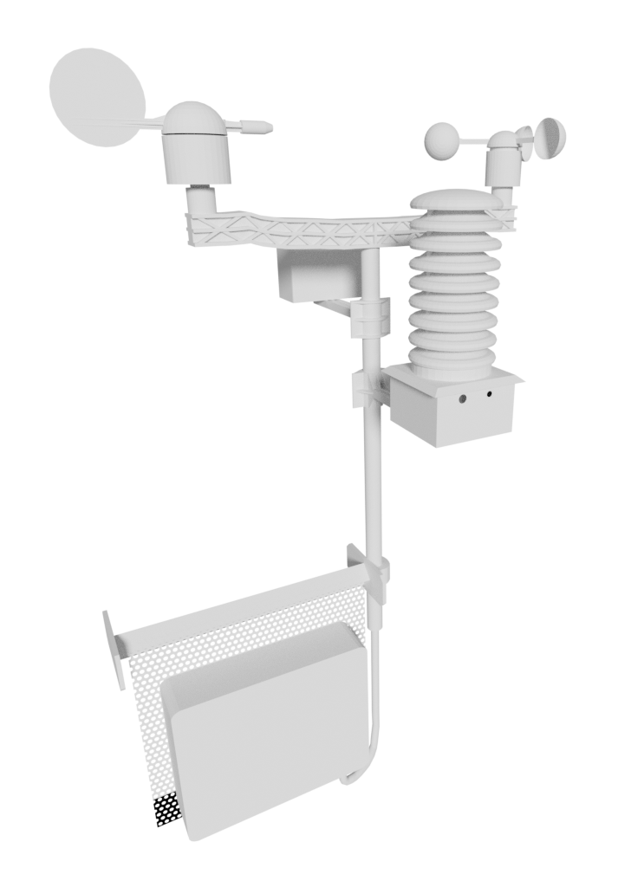

Aktuální stav počasí – data ze školní střechy
Mějte přehled o počasí u školy neustále u sebe pomocí naší Android aplikace.(verze 1.1)

Tato profesionální měřící stanice poskytuje živá data pro výuku a veřejnost.